O jogo que inspirou o Resgate Espacial, aberto por inteiro: as 18 fases da versão completa, que você nunca viu, lidas direto dos arquivos do jogo e redesenhadas como mapas, com o que cada fase pede, onde estava a graça e o que dá para levar para o nosso jogo.
Fase 1, a primeira da versão shareware. Os mapas não são capturas de tela: o Claude decifrou o formato dos arquivos de fase e redesenhou cada uma com uma cor por função. Toque num mapa para abrir em tamanho cheio.
| Proposta | Pilotar uma nave por cavernas, com gravidade e inércia, buscar contêineres de carga e levar todos de volta à base, sem bater em nada e sem deixar o combustível acabar. |
|---|---|
| Versão de teste | Shareware com 3 fases (fácil, média e difícil) por 30 dias; a versão completa custava US$ 30. A licença liberava cópias "em CD-ROM e em disquete", e o jogo saiu na coletânea 10 Tons of Games: Mega Collection 1 (1997), com 106 jogos num menu. Por isso você o conheceu numa revista, sem passar da fase 3. |
| Diversão | Dominar a nave, pousar com precisão, planejar a rota e resolver os "quebra-cabeças físicos" para chegar à carga. |
| Dificuldade | Encostar em qualquer coisa explode a nave; o pouso tem limite de velocidade; o combustível acaba; ventiladores, ímãs e correntes mexem na física; canhões e hastes pedem tempo certo; o porão leva uma carga por vez. |
| Oponentes | Não há inimigos que se movem ou perseguem. O adversário é a caverna: canhões fixos, hastes que abrem e fecham e forças que empurram, puxam ou giram a nave. |
| Recepção | 80% na revista alemã PC Player; 8,43/10 (44 votos) na Home of the Underdogs; 5/5 no MyAbandonware. |
Cada plataforma tem uma cor que diz a função, sem nenhum texto.
| Plataforma | O que oferece | Nas 18 fases |
|---|---|---|
| Base | Começa e termina aqui; entregar todas as cargas conclui a fase | 18 |
| Carga | Até 10 contêineres por plataforma, levados um por vez | 75 cargas |
| Combustível | Até 10 barris; um por pouso | 26 postos, 162 barris |
| Chave | Vermelha, verde, azul ou amarela; abre portões trancados | 45 |
| Extra | Turbo (2× empuxo, 5× consumo), vida extra ou porão (mais um lugar para carga) | 20 |
| Obstáculo | O que faz | Nas 18 fases |
|---|---|---|
| Ventilador | Empurra a nave numa direção, dentro de uma faixa; com grade na frente, é mais fraco | 73 |
| Ímã | Puxa a nave na direção dele | 48 |
| Corrente de ar | Gira a nave (verde no sentido horário, rosa no anti-horário); o manual diz que é "muito perigosa" | 26 |
| Canhão | Bolas de fogo numa direção fixa, com cadência de 15 a 180 quadros entre tiros | 84 |
| Par de hastes | Barras que avançam uma contra a outra; o vão (20 a 200 px) pode ser fixo ou abrir e fechar, e algumas mudam de velocidade sem aviso | 51 |
| Portão de mão única | Abre só do lado da seta e fecha depois que a nave passa | 77 |
| Portão trancado | Lâmpadas coloridas mostram as chaves exigidas (de 1 a 4) | 51 |
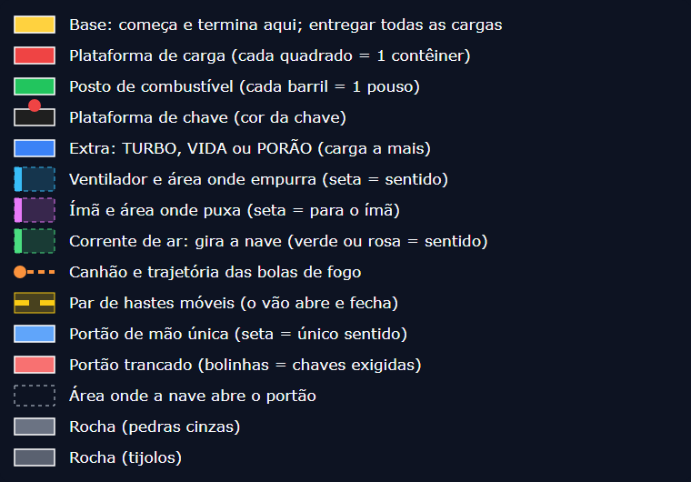
A dificuldade não sobe em rampa: sobe e desce em serrote. A fase 3, a última da versão de teste, é um pico; a 6 e a 8 quase não têm obstáculos; a 14 é a fase-chefe; a 18 fecha o jogo. Cada novidade entra uma de cada vez: chaves na fase 2, ímãs e correntes na 3, o porão na 7, as quatro chaves na 9 e o portão das quatro chaves na 10.
| Fase | Senha | Campos | Cargas | Barris | Chaves | Vent. | Ímãs | Corr. | Canhões | Hastes | Mão única | Trancados | Voo* |
|---|---|---|---|---|---|---|---|---|---|---|---|---|---|
| 1 | — | 60×26 | 2 | 5 | 0 | 0 | 0 | 0 | 3 | 1 | 2 | 0 | 248 |
| 2 | HYACINTH | 110×20 | 4 | 5 | 2 | 4 | 0 | 0 | 3 | 2 | 4 | 3 | 444 |
| 3 | MERIDIAN | 65×55 | 3 | 6 | 2 | 3 | 3 | 2 | 10 | 8 | 6 | 2 | 466 |
| 4 | KICKBACK | 57×38 | 3 | 6 | 2 | 0 | 0 | 0 | 4 | 2 | 2 | 2 | 316 |
| 5 | INTERVAL | 110×20 | 3 | 5 | 3 | 3 | 4 | 0 | 4 | 2 | 6 | 3 | 568 |
| 6 | YEARLING | 80×30 | 4 | 10 | 2 | 0 | 0 | 0 | 0 | 0 | 0 | 2 | 408 |
| 7 | AMBROSIA | 85×31 | 7 | 5 | 1 | 5 | 2 | 0 | 4 | 4 | 6 | 2 | 526 |
| 8 | POSITRON | 100×20 | 2 | 5 | 3 | 0 | 0 | 0 | 0 | 0 | 0 | 3 | 350 |
| 9 | CLAVICLE | 100×31 | 5 | 8 | 4 | 7 | 1 | 1 | 3 | 2 | 4 | 3 | 644 |
| 10 | DAFFODIL | 100×28 | 6 | 10 | 4 | 4 | 3 | 0 | 11 | 2 | 5 | 3 | 682 |
| 11 | DICTATOR | 60×40 | 4 | 7 | 2 | 3 | 6 | 2 | 1 | 2 | 4 | 2 | 304 |
| 12 | BLACKOUT | 81×39 | 7 | 12 | 4 | 4 | 2 | 4 | 7 | 8 | 5 | 3 | 546 |
| 13 | LABURNUM | 45×70 | 3 | 8 | 1 | 5 | 6 | 4 | 7 | 4 | 3 | 1 | 424 |
| 14 | ZUCCHINI | 100×51 | 8 | 27 | 4 | 10 | 5 | 3 | 8 | 8 | 8 | 8 | 1.228 |
| 15 | EYEGLASS | 70×20 | 2 | 3 | 2 | 6 | 4 | 2 | 4 | 3 | 5 | 2 | 316 |
| 16 | FRIPPERY | 45×55 | 4 | 13 | 1 | 3 | 0 | 2 | 6 | 2 | 6 | 1 | 514 |
| 17 | GUARDIAN | 72×37 | 4 | 10 | 4 | 7 | 6 | 2 | 4 | 1 | 4 | 7 | 694 |
| 18 | NUISANCE | 60×46 | 4 | 17 | 4 | 9 | 6 | 4 | 5 | 0 | 7 | 4 | 304 |
* Voo estimado: soma, em campos, das idas e voltas entre a base e cada carga, uma carga por viagem, pelo caminho livre mais curto, ignorando portões e obstáculos. Serve só para comparar o tamanho das fases.
Cada mapa mostra a fase inteira; a grade fina marca blocos de 5 campos. Na tela do jogo, só uma parte da caverna aparecia, e a câmera rolava.
Objetivo e rota. A base fica no alto, à esquerda; a carga (2 contêineres) e o posto (5 barris), embaixo. Dois portões de mão única formam um circuito: desce pelo poço do meio e volta subindo pelo poço da direita.
Desafio. Aprender a decolar, voar e pousar. Com o porão de uma carga, são duas viagens. Três canhões verticais e um par de hastes entre a carga e o posto.
Ideia de design. O circuito de mão única ensina a rota sem nenhum texto.
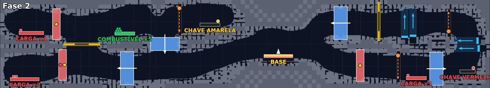
Objetivo e rota. Corredor horizontal de 110 campos com a base no meio. Três cargas à esquerda e uma à direita; a chave amarela perto da base e a vermelha na ponta direita.
Desafio. As cargas da esquerda ficam atrás de portões trancados, e a de baixo pede as duas chaves. É preciso cruzar o mapa inteiro, ida e volta, antes de começar a entregar.
Ideia de design. Base no meio, chave numa ponta e carga na outra transformam um corredor simples numa viagem longa.
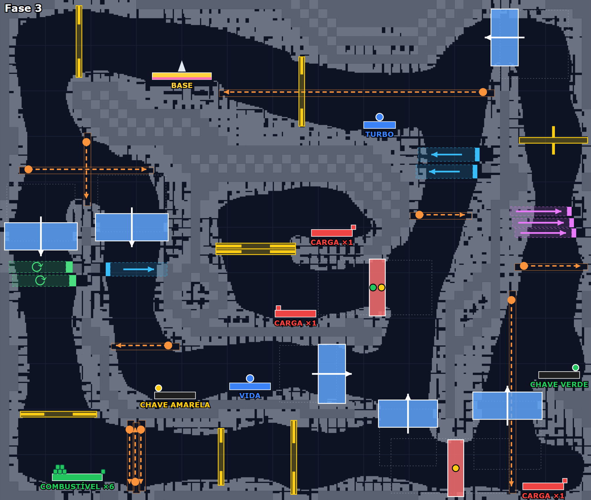
Objetivo e rota. Caverna grande (65×55) com três cargas espalhadas, chaves verde e amarela embaixo e o posto no canto inferior esquerdo.
Desafio. A fase mais densa até aqui: 10 canhões, 8 pares de hastes, ventiladores, ímãs, correntes de ar e um portão que pede as duas chaves. Primeira vida e primeiro turbo.
Ideia de design. A versão de teste terminava com uma vitrine de tudo o que o jogo completo tinha.
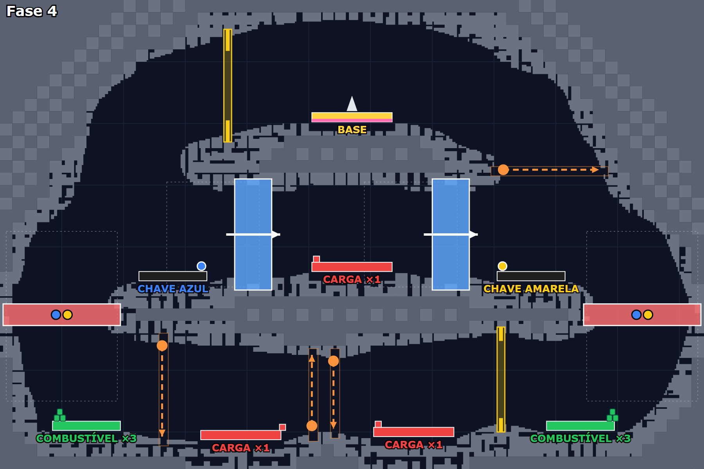
Objetivo e rota. Fase simétrica, com a base no centro alto; chave azul à esquerda e amarela à direita; uma carga no meio e duas embaixo.
Desafio. Os dois postos ficam nos cantos de baixo, atrás de portões que pedem as duas chaves. Sem as chaves, o combustível fica longe.
Ideia de design. Depois do pico da fase 3, uma fase curta e legível. A simetria deixa a rota óbvia.
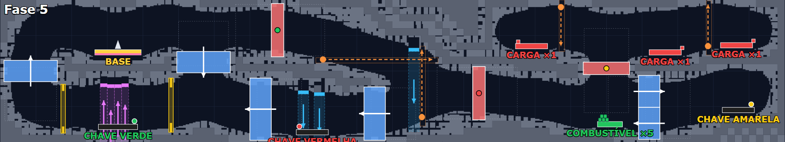
Objetivo e rota. Corredor horizontal com a base à esquerda e as três cargas no alto da ponta direita. Três chaves: verde perto da base, vermelha no meio e amarela no fim.
Desafio. A chave verde fica embaixo de uma fileira de 4 ímãs que puxam a nave para cima, e a vermelha fica entre ventiladores que sopram para baixo. Os portões trancados seguem a ordem do caminho.
Ideia de design. A recompensa fica dentro da área do perigo, e pousar ali é o quebra-cabeça.
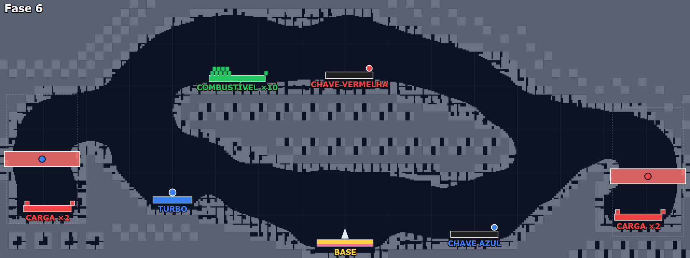
Objetivo e rota. Caverna aberta em volta de uma ilha central. Base embaixo, no meio; 2 cargas em cada ponta; posto de 10 barris no alto.
Desafio. Nenhum obstáculo, só dois portões trancados (vermelha e azul) e quatro viagens longas. O teste é pilotar e administrar o combustível.
Ideia de design. Uma fase de respiro no meio da sequência, que muda o tipo de desafio em vez de só baixar a dificuldade.
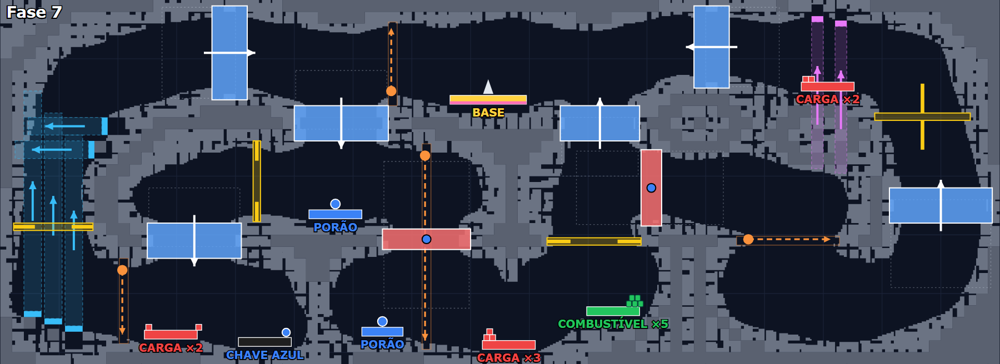
Objetivo e rota. Base no alto, no centro, e 7 cargas em plataformas de 2 e 3 contêineres. Há dois extras de porão.
Desafio. Pegar os porões muda a estratégia: com mais lugar, são menos viagens. Uma coluna de ventiladores à esquerda, ímãs ao lado da carga do alto à direita e 6 portões de mão única fazendo circuitos.
Ideia de design. Um upgrade opcional que recompensa quem planeja.
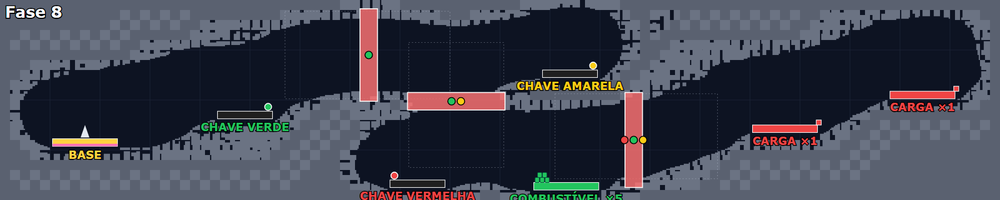
Objetivo e rota. Corredor horizontal com a base à esquerda e as duas cargas no fim. Três portões em sequência: o primeiro pede a chave verde; o segundo, verde e amarela; o terceiro, vermelha, verde e amarela.
Desafio. Não há obstáculos. É uma caça às chaves em cadeia: cada portão aberto dá acesso à próxima chave.
Ideia de design. A própria estrutura ensina a ordem certa.
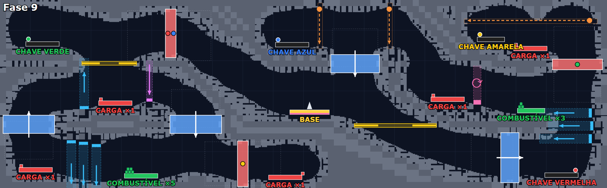
Objetivo e rota. A base no centro e cinco cargas espalhadas pelos cantos. É a primeira fase com as quatro chaves e com dois postos.
Desafio. Escolher a ordem: que chave pegar, que carga buscar e quando abastecer. Ventiladores em colunas, um ímã e uma corrente de ar.
Ideia de design. Base no centro como "hub", com braços para todos os lados.
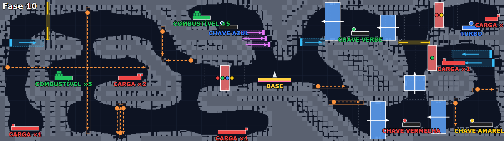
Objetivo e rota. Base no centro, seis cargas, quatro chaves e dois postos.
Desafio. 11 canhões, o maior número do jogo, incluindo um cruzamento de tiros à esquerda. O primeiro portão que pede as quatro chaves fica colado à base.
Ideia de design. Um portão-mestre perto do começo, visível desde o início, que só abre no fim.
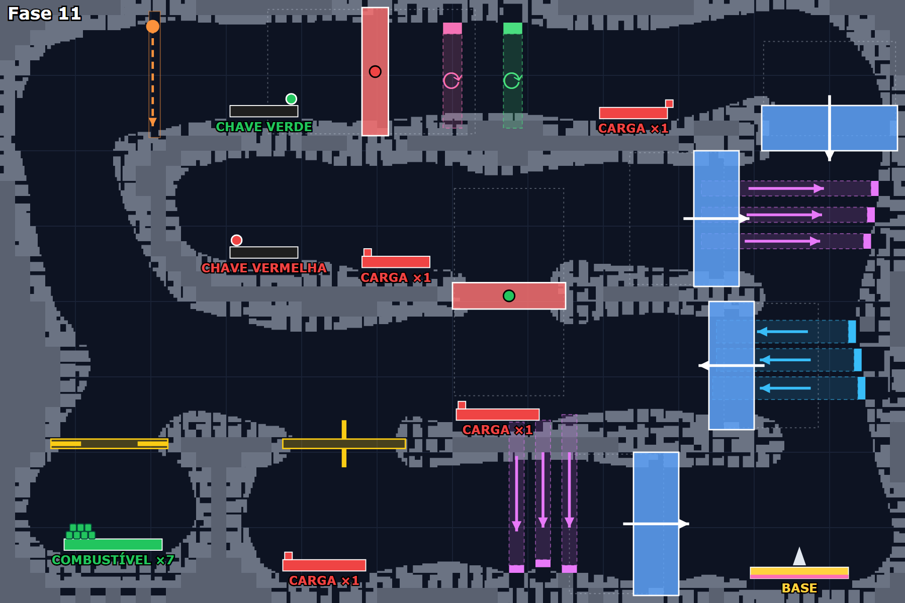
Objetivo e rota. A base fica embaixo, à direita; quatro cargas e o posto no canto inferior esquerdo. É a fase com mais espaço aberto (61%).
Desafio. No mesmo poço, ímãs puxam para a direita e ventiladores sopram para a esquerda, ao lado de portões de mão única. Mais três ímãs puxam para baixo perto de uma carga.
Ideia de design. Com espaço livre, o desafio vem das forças, e não das paredes.
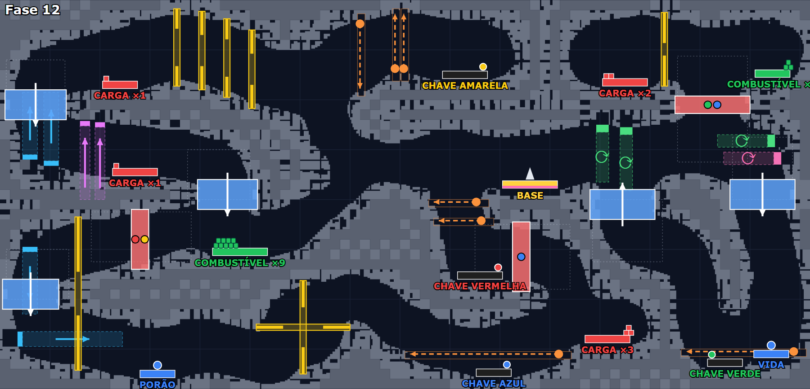
Objetivo e rota. Base no centro, sete cargas, quatro chaves, um porão e uma vida.
Desafio. Um corredor com 4 pares de hastes em sequência no alto, hastes em cruz embaixo, pares de correntes de ar e canhões em dupla.
Ideia de design. Repetir o mesmo obstáculo em série cria um trecho com identidade própria.
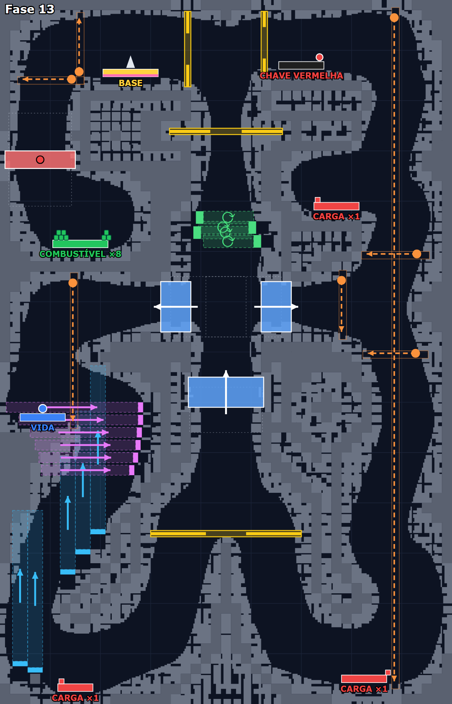
Objetivo e rota. Fase vertical (45×70): a base fica no alto, e as cargas, no fundo dos dois poços.
Desafio. No poço da direita, um canhão atira de cima a baixo pela altura inteira, e é preciso descer no ritmo dos tiros. No da esquerda, colunas de ventiladores sopram para cima e ímãs puxam para o lado, bem em cima da vida extra.
Ideia de design. Mudar a orientação muda o jogo: descer contra o vento e subir com carga são desafios diferentes.
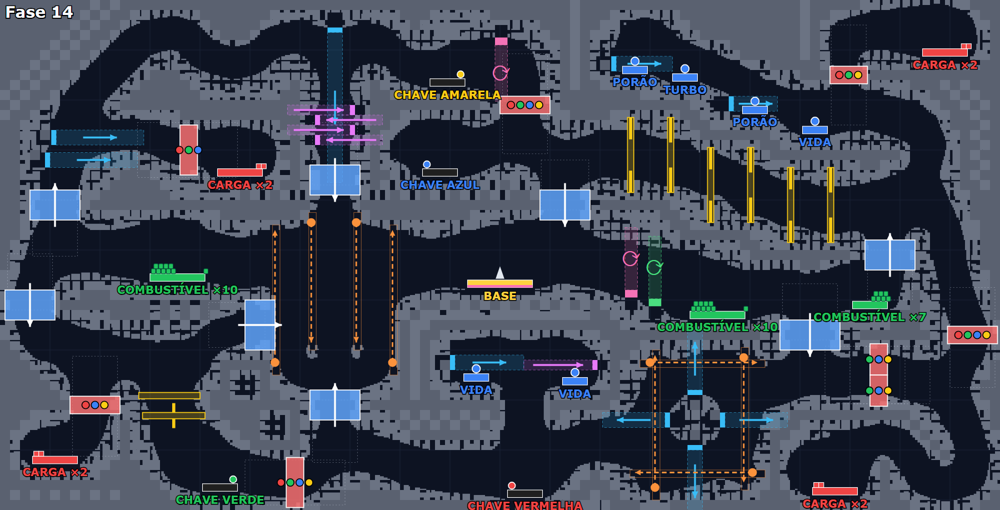
Objetivo e rota. A maior fase (100×51): base no centro, oito cargas em quatro pontas (duas em cada), três postos com 27 barris e seis extras.
Desafio. Oito portões trancados, vários pedindo três ou quatro chaves; um corredor de 6 pares de hastes; uma "caixa" de quatro canhões cruzando tiros, com ventiladores no meio. É o maior voo do jogo.
Ideia de design. A fase-chefe junta tudo o que o jogador aprendeu e dá recursos à altura: porões, vidas e muito combustível.
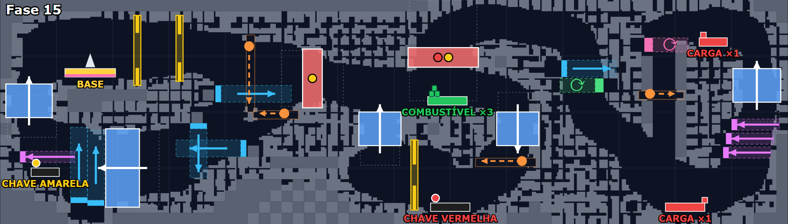
Objetivo e rota. Corredor horizontal curto, com as duas cargas na ponta direita e, no meio, um portão que pede as chaves vermelha e amarela.
Desafio. Um único posto com só 3 barris, o menor do jogo, no meio de ventiladores, ímãs e correntes de ar.
Ideia de design. Depois da fase-chefe, uma fase curta, mas com o combustível apertado.
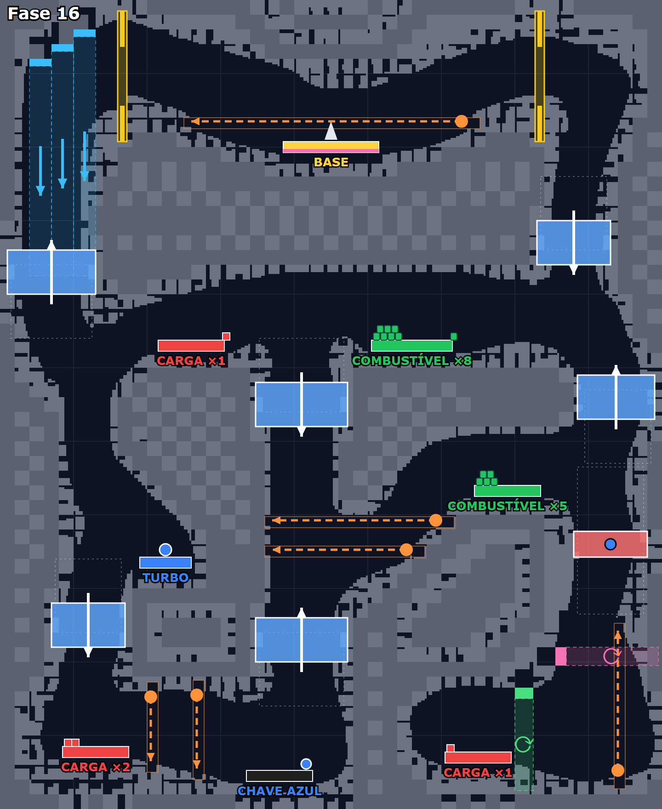
Objetivo e rota. Fase vertical, com a base no alto e as cargas embaixo; a chave azul, no fundo, abre o caminho da direita.
Desafio. Canhões horizontais varrem os corredores, um deles logo acima da base, e ventiladores sopram para baixo no poço da esquerda.
Ideia de design. O perigo começa já na saída da base.
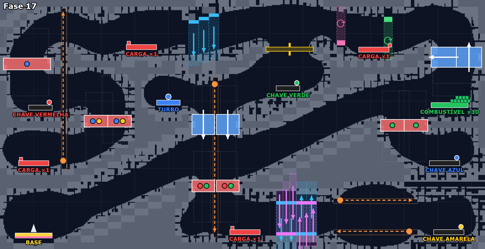
Objetivo e rota. Túneis em diagonal. A base fica embaixo, à esquerda; quatro cargas e quatro chaves espalhadas. A carga mais distante fica a 135 campos da base, a maior distância do jogo.
Desafio. Sete portões trancados com combinações diferentes (azul e amarela; verde; vermelha e verde) e um "liquidificador" de ventiladores e ímãs que alternam cima e baixo.
Ideia de design. Túneis diagonais exigem voar inclinado o tempo todo, um uso novo da mesma física.
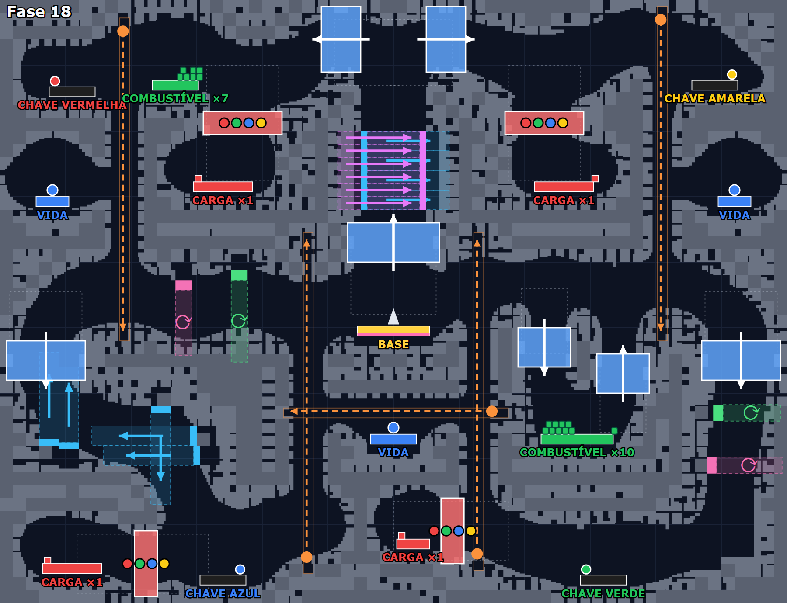
Objetivo e rota. Fase simétrica: a base no centro, as quatro chaves nos quatro cantos e as quatro cargas atrás de portões que pedem todas as chaves.
Desafio. Primeiro todas as chaves, depois todas as cargas. Um misturador de ímãs e ventiladores logo acima da base, canhões longos nas laterais e três vidas extras.
Ideia de design. A prova final tem uma estrutura clara (coletar, abrir e entregar), e a dificuldade está na execução.
Críticas negativas quase não existem nas fontes. O que aparece é a música faltando na cópia preservada e, pelo próprio manual, a dificuldade alta, compensada com senhas, trapaças e física ajustável.
Tudo aqui é proposta para você decidir. O detalhe, com cada pendência ligada, está no documento do repositório.
| Do Crazy Gravity | No Resgate Espacial |
|---|---|
| Ritmo em serrote | Em cada mundo de 10 fases, um respiro no meio e uma fase-chefe no fim |
| Ventilador, ímã e corrente de ar | Vento solar que empurra, campo gravitacional que puxa, redemoinho que gira: o catálogo de obstáculos (P-011) sem quebrar a regra "sem inimigos que atiram" |
| Hastes com vão que abre e fecha | É a nossa "barreira que sobe e desce", com vão fixo ou variável |
| Canhões | Contrariam a nossa regra; uma versão ambiental seria um jato de gás ou um meteoro periódico |
| Portões de mão única | Ida por um caminho e volta por outro, sem atalho |
| Chaves e portões trancados | Com cuidado: alongam a fase, e o nosso jogador quer partidas curtas (D-028) |
| Combustível por barril | Uma alternativa ao posto que enche o tanque (D-026, #93) |
| Porão, turbo e vida dentro da fase | Referência de itens justos, ganhos jogando (P-017) |
| Demonstração das fases 1 a 3 | O original já fazia a nossa DEMO (D-031) |
| Recorde por fase | Confirma o ranking por fase (D-024) |
| Dificuldade feita de parâmetros físicos | Modificadores (P-012) e o modo Nightmare (P-018) |
| Versão de teste com 3 fases | Modelo "lite": algumas fases grátis, mostrando a curva inteira (P-014) |
A diferença que importa: o Crazy Gravity é um labirinto de vários minutos por fase. O nosso é um corredor da esquerda para a direita, para partidas curtas no celular. As ideias de obstáculo e de ritmo servem; a escala das fases, não.
A versão shareware 2.0E, preservada no Internet Archive, traz os arquivos das 18 fases, mesmo que só 3 fossem jogáveis. O Claude decifrou o formato (mapa de campos de 32 pixels, pedaços de pedra, ventiladores, ímãs, correntes, canhões, hastes, portões, plataformas e a senha de cada fase), conferiu as senhas com as listas publicadas e redesenhou as fases. Só arquivos de dados foram baixados; o jogo não foi executado. Os extras de código 5 e 6 foram lidos como turbo e vida pela ordem do manual.
No repositório: docs/benchmark/crazy-gravity.md e docs/10-benchmark-de-level-design.md (decisão D-032).